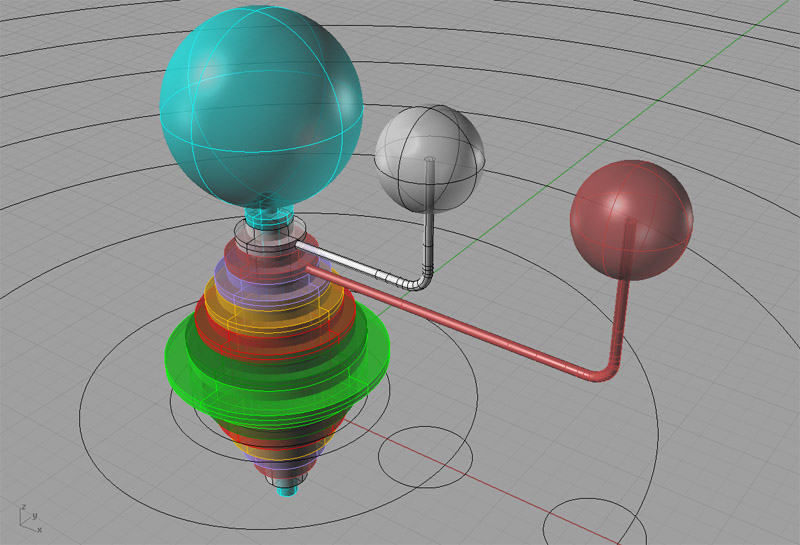

Notes on Constructing
an Orrery / Antikythera Mechanism
I've always had a great interest
in Astronomy, and I read with great interest
recent articles about the Antikythera Mechanism, which was apparently
an ancient orrery or simulator of motions of the heavenly bodies. The
machine, which was constructed circa 80 BC, could represent the motions
of most heavenly bodies known in its time using a clockwork consisting
of 37 gears.
Differential Gear Mechanism Was
Way Ahead of Its Time...
The front dial would show the progression of the Sun and
Moon through the Zodiac according to the ancient Egyptian calendar. The
lower back dial gives the Metonic cycle, the Synodic cycle, and the Lunar
year of 12 Synodic months. Later researchers determined that the device
could show the motion of the visible planets through the Zodiac, as well
as predict Solar and Lunar eclipses using the Saros scale. It also displayed
the Calippic scale.
Front and Back of a Reconstructed
Model of the Antykthera Mechanism
This Model May Be Closer. Note
the Spiral Tracks on the Back Dials
The Sun and Moon Dials Tracking
Against the Zodiac...
My Own Astronomical Clock
Design: Bobtikythera?
After reading some about the Antikythera Mechanism, I
was inspired and got interested in designing an astronomical clock of
my own. I don't know if I will ever finish the design, let alone build
it, but it is an interesting and challenging exercise. I'm learning a
lot about clockwork, as well as refreshing some old memories about astronomy
and learning for the first time more about how the Ancients dealt with
heavenly bodies. Fascinating stuff!
Let's consider the ratios needed to produce the outputs.
We will assume the input crank is 1 Egyptian calendar day each revolution:
|
Mechanism Feature
|
Period
|
Purpose
|
| Input Crank |
1 rpm = 1 Egyptian
Day = 1.0007 Solar Days |
Moves all the other dials. In the Egyptian Calendar,
a solar year is exactly 365 days, so the clockwork need not account
for leap years. |
| Sideral Month Dial |
1 rpm = 27.3 Egyptian Days |
Motion of Moon Around the Zodiac. |
| Sidereal Year Dial |
1 rpm = 365 Egyptian Days |
Motion of Sun Around the Zodiac. This was the front
dial of the Antikythera Mechanism. Also provided was a slip dial that
could be used to correlate the Egyptian days back to regular calendar
days incorporating the leap year. This second dial was set manually.
|
| Synodic Cycle or Month Dial |
1 rpm = 29.5 Egyptian Days |
1 rpm gives all the lunar phases |
| Lunar Year Dial |
1 rpm = 12 Synodic Cycles |
|
| Metonic
Cycle |
1 rpm = 235 Synodic Cycles = 19 Tropical Years |
Can be used to relate lunar and solar calendars.
For example, a Metonic cycle is 1:19 Tropical Years and 1:235 Synodic
Cycles. |
| Saros Cycle
|
1 rpm = 223 Synodic Cycles |
Used to predict lunar and solar eclipses. If an eclipse
occurs, another will occur exactly one Saros cycle later. By marking
off relative positions of eclipses (both lunar and solar) on this
wheel, and having the wheel turn at the Saros Cycle rate, we can show
when eclipses will occur. |
| Calippic
Cycle |
1 rpm = 76 Tropical Years = 940 Synodic Cycles |
A more accurate way to relate lunar and solar calendars
than the Metonic Cycle. |
| Mercury |
|
Motion of Mercury Around the Zodiac. |
| Venus |
|
Motion of Venus Around the Zodiac. |
| Mars |
|
Motion of Mars Around the Zodiac. |
| Jupiter |
|
Motion of Jupiter Around the Zodiac. |
| Saturn |
|
Motion of Saturn Around the Zodiac. |
A Geartrain Schematic:
Here is a schematic that I use to represent the inter-relationship
between the various gears or wheels in the Mechanism I'm designing. I
think it simplifies the understanding of how it would work:
Gear Mechanism Schematic...
Each of the light blue circles represents
a major gear and dial in the system. In other words, it is both a gear
that others may engage as well as an output of some kind. For example,
the Synodic Cycle is a dial showing the lunar phases as well as an important
gear that is driven through a 29.5:1 ratio from the input shaft and goes
on to drive7 subsequent major gear/dials and 4 auxilliary reduction gears.
The dark blue circles represent what I'm
calling auxilliary reduction gears. In my more detailed design, I estimated
the diameter of each gear in the system given a 20 tooth per inch gear
pitch. Based on that estimate, I added auxilliary gearing to keep the
largest gears from exceeding much more than 8" in diameter. The largest
gear/dial is that governing the motion of Mars through the Zodiac at 8.4".
The smallest gear/dials (doesn't count the aux reduction gears) have 10
teeth each and correspond to the Input in days and the Tropical Year.
Geartrain Details:
To work out the details of the geartrain, I designed an
Excel spreadsheet that tracked the following for each gear/dial:
- Name
- Input Source: What gear/dial or sub-gear on the same
hub drives this gear/dial?
- Ratio: What is the ultimate reduction ratio we want
to achieve from the input?
- Auxilliary Gear Ratio: The reduction ratio of any auxilliary
gear that may be present. This ratio was hand tuned to keep gear diameters
to 8" or so and also to minimize the potential errors if the ratios
dictated something other than an integer number of teeth.
- Teeth: The number of teeth around the circumference
of the gear to achieve the desired ratio from the input.
- Circumference: Given the number of teeth divided by
20 teeth per inch pitch, what would be the circumference of this gear?
- Diameter: Circumference/Pi gives diameter of the gear.
- Tooth Error: For gears that did not have an exact number
of teeth due to the ratios (e.g. Mercury gear had 439.71 teeth), what
would be the positioning error in inches? Simply divide the portion of
the fractional number of teeth closest to the next integer number by 20
teeth per inch to arrive a the maximum error in the dial. Most dials wound
up with less than 0.001" error, except for Mercury, which had right
at 0.001". Given backlash and the likely precision with which the
mechanism can be made, I judge that 0.001" or less error will be
inconsequential to the accuracy of the mechanism.
- Purpose: What is the dial used for or what does it represent?
- Calibration: How will the dial be calibrated? For example,
the Metonic Cycle dial will be graduated into 19 divisions, each representing
a normal year.
Here are the details I came up with:
|
Name
|
Input
|
Ratio
|
Aux. Gear
Ratio
|
Teeth
|
|
Diameter
|
Purpose
& Calibration
|
| Sidereal Month |
Input Crank |
27.3 |
|
273 |
13.650" |
4.345" |
Lunar position on Zodiac |
| Synodic Cycle |
Input Crank |
29.5 |
|
295 |
14.750 |
4.695 |
Lunar Phases |
| Sidereal Year |
Input Crank |
365 |
10 |
365 |
18.250 |
5.809 |
Position of Sun in Zodiac |
| Sidereal Year Sub-Wheel |
On Sidereal Year Hub |
|
|
10 |
0.500
|
0.159 |
Drives Sunspot Cycle |
| Input (Days) |
Input Crank |
|
|
10 |
0.500 |
0.159 |
Input Crank. Calibrated into 24 hours w/ Egyptian
sunrise/sunset |
| Tropical Year |
Metonic Cycle Sub-Wheel |
1:19 |
|
10 |
0.500 |
0.159 |
Standard Months & Seasons |
| Metonic Cycle Sub-Wheel |
On Metonic Cycle Hub |
|
|
190 |
9.500 |
3.024 |
|
| Synodic Cycle Sub-Wheel |
On Synodic Cycle Hub |
|
|
10 |
0.500 |
0.159 |
|
| Lunar Year |
Synodic Cycle Sub-Wheel |
12 |
|
120 |
6.000 |
1.910 |
|
| Saros Cycle |
Synodic Cycle Sub-Wheel |
223 |
5 |
446 |
22.300 |
7.098 |
Lunar & Solar Eclipse Cycle. Calibrate
w/ historical eclipses that will repeat. |
| Metonic Cycle |
Synodic Cycle Sub-Wheel |
235 |
10 |
235 |
11.750 |
3.740 |
Divide into 19 Solar Years per revolution,
4 revolutions. |
| Metonic Cycle Sub-Gear #2 |
On Metonic Cycle Hub |
|
|
10 |
0.500 |
0.159 |
|
| Calippic Cycle |
| Metonic Cycle Sub-Wheel
#2 |
|
4 |
|
40 |
2.000 |
0.637 |
Divide into 76 Solar Years per revolution.
|
| Mercury |
Input Crank |
87.94 |
2 |
439.71 |
21.986 |
6.998 |
Position of Mercury on Zodiac |
| Venus |
Input Crank |
224.85 |
4 |
562.13 |
28.107 |
8.947 |
Position of Venus on Zodiac |
| Mars |
Input Crank |
686.51 |
13 |
528.08 |
26.505 |
8.405 |
Position of Mars on Zodiac |
| Jupiter |
Synodic Cycle Sub-Wheel |
93.03 |
2 |
465.16 |
23.258 |
7.403 |
Position of Jupiter
on Zodiac |
| Saturn |
Synodic Cycle Sub-Wheel |
64.43 |
7 |
520.61327 |
26.031 |
8.286 |
Position of Saturn on Zodiac |
| Sunspots |
Sidereal Year |
11 |
|
110
|
5.500 |
1.751 |
Relative % of Sunspots, With 100% being maxima
and 0% being minima |
Rhino Geartrain Layout
Next, I tried laying out some of the gears using Rhino
3D, just to get an idea of how things might fit together. This was my
first attempt at a layout for the gears needed to drive the inner planets.
It's everything in the gear schematic above that's tied directly to the
input wheel except for the synodic wheel.
A first attempt at gear layout
in Rhino. The exact center is the Input Gear, and the various other gear
trains are color coded. I'm thinking I'll want something a little more
compact!
I also sketched out an orrery hub mechanism
in Rhino to see how that might work:
Orrery front view. That's Earth
in the center, Moon, Mercury, Venus, Sun, Mars, Jupiter, and Saturn. That
is the order the Ptolemaic universe worked in...

A closer perspective view of the
Orrery mechanism...
This orrery piece presents some real design
issues. The drawing shows the heavenly bodies in the Ptolemaic perspective,
with Earth at the center and all the other bodies revolving around it.
As you recall, refuting this view is one of the things that put Gallileo
(and others) in hot water with the Church.
The Ptolemaic perspective is more in keeping
with the feel I'd like to have for the clock, which is a lot more astrological
and Ancient-looking than a more modern orrery. Frankly, I'd like to do
both at some point and have them sit next to one another. The problem
is that the planets display retrograde motion. In other words, at certain
times of the year, their apparent motion against the stars reverses for
a time and the planet "backs up". This happens as planets lap
each other around the sun. In the Ancient view, this was accounted for
by having the planets travel in little sub-circles called "epicycles"
as they made their circuit around the big circle. You can imagine that
this would make for complex motion to simulate with clockwork!
The easier way out is to have the orrery
display the modern view, with Sun at center and planets circling around
it. To determine where a planet appears in the Zodiac would require sighting
along the line from the Earth to the planet and extending that line into
the zodiac. Not quite so elegant, although physically more realistic and
also easier to construct a clockwork for.
A rendering of the baseplate for
the orrery...
Astronomical Theory Notes
Ancient Astronomical Cycles:
A little extra explanation of some of these cycle sand
why they are important.
- Metonic Cycle: Every 19.0 tropical years ( or 235 synodic
months) from the precise date of full/new Moon, another full/new Moon
occurs at approximately the same degree of the ecliptic and about the
same date. the ancient Greeks called 19 the golden number as the same
lunar phase repeates on the same date every 19.0 years.
- Ancient Egyptian Calendar: Also called a "wandering
calendar" because it consists of 365 days and ignores leap years,
hence it shifts one day in every four years. The Egyptian calendar day
starts at sunrise and noon is defined as 6 diurnal hours later. Sunset
occurs 12 diurnal hours after sunrise and midnight is 6 nocturnal hours
later. The length of the hours depends on the observer's latitude as well
as the season. Ptolemy adopted hours of equal length, known s equinoctial
hours, and shift the epoch from sunrise to mean local noon (6 hours) at
the meridian of Alexandria. Sunrise, measured in these hours, will on
average occur 6 hours earlier and sunset 6 equal hours later (on average),
but the exact value depends on the season.
- Zig Zag Functions: A unique technique developed by the
Seleucian Babylonians to deal with the irregular motions of planets through
the Zodiac.
Other Cycles:
Cycles not tracked by the original Antikythera Mechanism,
but that would be interesting and straightforward to recreate.
- Sunspot Cycle: The sun goes through an 11 year cycle
of sunspot minima to maxima. The last high
was in 2001, so the next one will be 2012. It would not be hard to
add a dial tracking the cycle, although the ancients had no idea there
was such a cycle. Gallileo discovered sunspots, but it
wasn't until 1843 that an amateur astronomer named Heinrich Schwabe discovered
the 11 year cycle.
- Birthdays, Anniversaries, and Important Dates: A single
revolution of the Calippic Cycle, the longest duration cycle tracked by
this device, corresponds to 76 years. Given a "starting date"
of 1900, each revolution of the Calippic cycle will take us from 1900
to 1976 (the United States Bicentennial) to 2052 to 2128. So 4 revolutions
is enough to record anyone living's birthdate and then some. Wouldn't
it be interesting to turn the crank and see the configuration of the stars
on the day you were born and every birthday thereafter?
Antikythera Links
Original
1959 Scientific American Article on Antikythera Mechanism
Details
of the Antikythera Mechanism's Construction
The
Antikythera Computing Device: Excellent data on internal functioning,
especially the differential gear system.
The
Wheels of Greek Astronomers: Excellent description of the Antikythera
Mechanism.
Antikythera
Animations
Lego Antikythera
Astronomical Cycle Links
Moon-Sun
Glossary
Eclipse
Cycle Calculator
Almagest
Emphemeris Calculator: Ptolemy's method.
Ancient
Planetary Model Animations
Models
of Planetary Motion from Antiquity to Renaissance
Encyclopedia
Brittanica Description of Ancient Calendars
Many different
kinds of months defined
Astronomy
Formulas I: Periodicity Formulas
Astronomy
Formulas II: Illumination Geometry
Babylonian
Astronomy: Good info on how the Babylonians figured cycles for planets
and such.
Introduction
to Ancient Astronomical Concepts: Good info on synodic periods.
See also the Orrery Gallery...